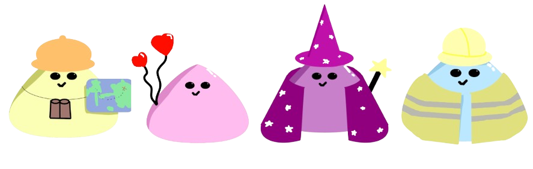

Assignment
Garage2020 is collaborating closely with the municipality of Eindhoven to address the challenges youth workers face in navigating the rapidly changing online world, where Dutch youth spend an average of 6 to 7 hours per day. The municipality has commissioned Garage2020 to develop an innovation to enhance the digital footprint of youth work.The current concept, known as the 'social sphere,' aims to create a platform where youth workers can use social media channels to engage and support young people in Eindhoven. The project involves collaboration with stakeholders like Fenna Dam and Fontys to advance the initiative to the next phase.
Context
I will be describing what only I did during this project duration, but still giving overall context of the overall project. Therefor the chaptering may seem odd at first, but I have tried to still tie it all together
Making of the archetypes
In continuing the 'Social Sphere' project, we've
drawn inspiration from the groundwork laid by the
previous group. They envisioned categorizing
youth
workers into archetypes, a strategy aimed at
providing deeper insights into their strengths and
areas of expertise. To build upon this concept, we've
delved into the realm of personality assessments,
specifically leveraging the Myers-Briggs Type
Indicator (MBTI) and scientifically-backed
archetypes.
The MBTI, a widely recognized and respected
personality framework, classifies individuals based
on psychological preferences in how they perceive
the world and make decisions. This tool provides a
nuanced understanding of various personality traits,
allowing us to tailor archetypes that resonate
with
the unique qualities of youth workers.
Our approach involves aligning MBTI personality
types with specific archetypes, creating a more
refined and individualized framework for
categorization. By tapping into the scientific
backing of the MBTI, we aim to enhance the accuracy
and relevance of the archetypes, ensuring they go
beyond mere labels to genuinely capture the diverse
strengths and characteristics of youth workers.
We wanted these archetypes to resonate visually.
Cue the adorable characters – each crafted to embody
the unique qualities of the final four archetypes.
Our design process aimed to strike a balance between
cuteness and representation. Whether it's the
nurturing archetype exuding warmth or the analytical
archetype sporting a studious demeanor, each
character was refined through iterations to capture
both the essence of the personality types and an
irresistibly cute appeal. The journey of bringing our
scientifically-backed archetypes to life doesn't end
with static characters; we've ventured into the
captivating realm of 2D animation using After
Effects to infuse dynamic charm into these
personas.
Making of the archetype quiz AI
My assigned task in this group project was to
create a archetype quiz. The challenge
was not just about crafting an engaging quiz but
ensuring its accuracy and relevance for our target
audience—youth workers.
Read the
Documentation
In my quest for the perfect dataset, I opted for the Myers-Briggs Type Indicator (MBTI) dataset, renowned for its scientific utility and reliability. This rich dataset contained textual information intricately linked to personality types. Inspired by the MBTI's four dichotomies, I grouped the personality types into four distinct archetypes, aligning with our project's focus on youth workers.

The data journey kicked off with a thorough exploration of the dataset—data understanding. This involved unraveling the nuances of the text data and discerning patterns that would later prove instrumental in predicting archetypes. The subsequent stage, data processing, was a meticulous dance with the data, involving cleaning, transformation, and feature engineering to prepare it for the impending machine learning adventure.
The heart of the project lay in the development of the AI model. Armed with the pre-processed data, I experimented with various machine learning models, ranging from logistic regressions to support vector machines (SVM), seeking the optimal algorithm that would best predict archetypes. The climax of this endeavor was an impressive 77% accuracy, a testament to the efficacy of the chosen model.

With the AI performing admirably, I shifted focus to the end-user experience. I constructed a user-friendly quiz tailored for our target audience. This quiz, designed to predict the archetype personality of young workers, hinged on the open-ended responses they provided. The results were nothing short of insightful, providing each participant with a personalized archetype, a detailed description, and accuracy scores indicating their alignment with each archetype.
Taking the project a step further, I endeavored to make this tool accessible to my group members. Enter JavaScript—an essential tool in converting this AI masterpiece into a web-friendly format. This transition not only widened the usability of the archetype quiz but also showcased the interdisciplinary nature of our project.
In essence, my contribution to the group project evolved from data exploration and machine learning model development to the creation of a user-friendly quiz, culminating in a seamless integration of the AI into a JavaScript-powered interface. The journey was an exploration of the intersection between data science and user experience, making the complex world of AI accessible and engaging for our target audience.
What is the current status of online youth work?
Literary study- Expert interview- Observations
How can youth workers be trained to connect with young people through an online education platform?
Benchmark creation- Think aloud- concept
How can an online education platform be developed?
Literary study- Competitor analysis- proof of concept
What online problems do young people experience and how can youth workers help?
Focus group- observation
How can young people be supported online and to what extent do ethics and privacy play a role?
expert interviews- Literary study
F